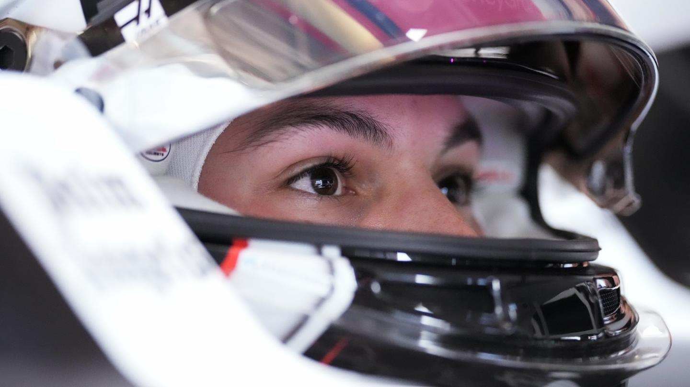

Ollie Bearman #87
Ollie Bearman makes his full-season debut for MoneyGram Haas F1 Team after a string of ‘super sub’ appearances last season and becomes the fourth Brit on the grid for the 2025 FIA Formula 1 World Championship. The Formula 1 rookie began his motorsport journey at the age of eight years old, karting in 2013. His talent was immediately recognized after he finished in the top five for the Kartmasters British Grand Prix in 2014. Shortly after, he finished in the top five once again in the 2015 Super 1 National Championship, followed by a second place finish the following year.
Bearman quickly came into the spotlight in 2019 where he earned the Winter Cup in the junior X30 class, as well as placing first in the Euro Series and International Final. In 2020, Bearman had a successful transition to open-wheel car racing by competing in the German F4 championship, where he placed in the top 10 with 144 points. After transitioning from US Racing to Van Amersfoort Racing for the 2021 German and Italian F4 championships, Bearman finished victorious, becoming the first driver to win both titles.Bearman quickly came into the spotlight in 2019 where he earned the Winter Cup in the junior X30 class, as well as placing first in the Euro Series and International Final. In 2020, Bearman had a successful transition to open-wheel car racing by competing in the German F4 championship, where he placed in the top 10 with 144 points. After transitioning from US Racing to Van Amersfoort Racing for the 2021 German and Italian F4 championships, Bearman finished victorious, becoming the first driver to win both titles.
Bearman was subsequently signed to the prestigious Scuderia Ferrari Driver Academy in November 2021. His debut in the 2022 Formula 3 Championship resulted in place third overall with Prema Racing. Bearman then continued his career with Prema Racing for the 2023 Formula 2 Championship. Despite finishing sixth in the Drivers’ Championship, he assisted Prema Racing in securing second in the Constructors’ Championship.
The Scuderia Ferrari Driver Academy driver followed the likes of Charles Leclerc, Mick Schumacher and Robert Shwartzman in receiving outings with MoneyGram Haas F1 Team in 2023 through the team’s long-standing relationship with Scuderia Ferrari, participating in FP1 in Mexico City and Abu Dhabi, followed by a full-day in the VF-23 at the end-of-season test in Abu Dhabi. Both MoneyGram Haas F1 Team and Scuderia Ferrari announced Bearman as a reserve driver for the 2024 season, scheduled to take part in FP1 sessions for the American marque: Imola, Barcelona, Silverstone, and Budapest.
In his role for Scuderia Ferrari, Bearman made a memorable Formula 1 debut back in March 2024 at the Saudi Arabian Grand Prix substituting for the sidelined Carlos Sainz – in doing so becoming the third-youngest racer in Formula 1 history. A mature performance from the then 18-year-old saw Bearman classified seventh and firmly in the points on his one-off race appearance behind the wheel of the SF-24. Coinciding with his home race at Silverstone Circuit, Bearman signed for MoneyGram Haas F1 Team on a multi-year contract beginning with the 2025 FIA Formula 1 World Championship.